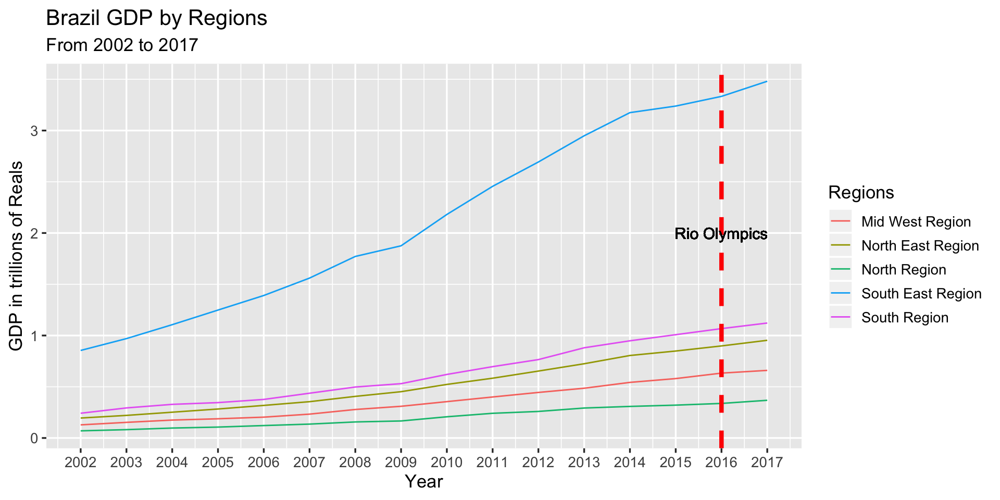
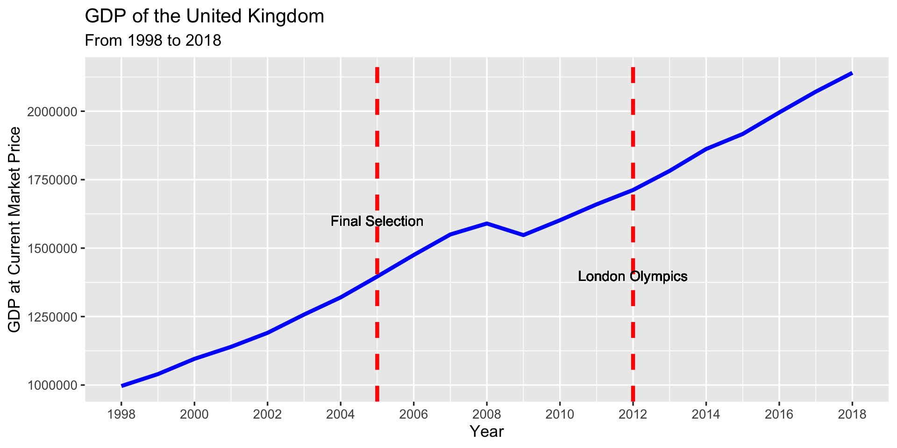

Chapter 5 Brazil - 2016 Rio Olympics
Analysis of Economic impacts on Brazil hosting Olympics by Regions
We can divide Brazil to 5 regions, where Rio de Janeiro is in the South-East Region.
Reference: https://en.wikipedia.org/wiki/Regions_of_Brazil
5.1 Brazil GDP
Source Data: brazil_gdp.csv
Brazil Regional GDP

Brazil Regional GDP Increasing Rate from 2011 to 2017
Observation:
1. South East Region of Brazil has much higher GDP than other 4 regions over years.
2. Seems no significant increasing on Brazil regional GDP by 2016 Rio Olympics.
3. Seems changes of regional GDP are unrelated to the Olympic games.
5.2 Brazil Monthly Income
Source Data: brazil_monthly_income.csv, brazil_unemployment.csv
Monthly Income Distribution
First, take a view at the distribution of monthly income for the entire country from 2012 to 2020:
Note: We dropped missing values.

From the Boxplots wo can find that the median of monthly income shows an increasing pattern from 2012 to 2020. However, there are higher outliers for each year, so we remove those higher outliers for further analysis on density estimation for better visualization.
Higher Outlier definition: points above \(Q_3 + (1.5\times \text{IQR})\), where \(Q_3\) is the upper quartile and IQR is the Interquatile Range.

Regional Monthly Income Distribution in the Olympics Year 2016

Observation:
Our hypothesis may be “hosting the Olympics can increase peoples’ income in the hosting city/region”. However, from this plot we find that the South East Region does not show a distribution of higher monthly income in year 2016.
Regional Average Monthly Income
Now we want to visualize the regional average monthly income. Here we keep the outliers because we are calculating the regional average for each year.

Regional Monthly Income Increasing Rate from 2012 to 2020
Observation:
1. Seems no significant difference of increasing rate between the 5 regions around year 2016.
2. For South East Region, the increasing rate in 2016 is lower than that in 2015. (Why?)
5.3 Brazil Unemployment Rate

From this plot we find that year 2017 has the highest average unemployment rate. Also, the average unemployment rate keeps increasing from 2015 to 2017.
Unemployment Rate by Regions

Unemployment Rate Increasing Rate by Regions from 2012 to 2019
Obserevation:
Since 2014, the average unemployment rate keeps increasing for all of the 5 regions until 2017. The highest increasing rate appears at year 2016 which is the Olympics year for all of the 5 regions.
5.4 Brazil Tourism
Source Data: brazil_tourism_jobs.csv

Brazil International Tourists